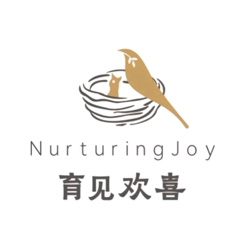

<!DOCTYPE html>
<html lang="zh-CN">
<head>
<meta charset="UTF-8">
<meta name="viewport" content="width=device-width, initial-scale=1.0, maximum-scale=1.0, user-scalable=no">
<title>MBTI 人格测试</title>
<style>
/* ============================================================
 * MBTI 人格测试 H5 网页版
 * 单 HTML 文件，可直接双击打开或部署到任意静态服务器
 * 风格：暖橙红色 + 米白 + 卡片式设计
 * ============================================================ */

/* ---------- Reset & Variables ---------- */
*, *::before, *::after { margin: 0; padding: 0; box-sizing: border-box; }

:root {
  /* MiMo 风格设计变量（参考 mimo.mi.com） */
  --primary: #FB8147;
  --primary-light: #FFA26B;
  --primary-dark: #E8682A;
  --primary-bg: #FFF3ED;
  --bg: #FCFAF8;
  --card: #FFFFFF;
  --border: #F0EBE5;
  --gold: #EBc077;
  --gold-light: #F9E4BF;
  --gold-bg: #F6F3EC;
  --pink: #FF6B9D;
  --pink-bg: #FFF0F5;
  --text-primary: #1F2329;
  --text-regular: #4A4A4A;
  --text-secondary: #666666;
  --text-placeholder: #999999;
  --success: #4CAF88;
  --warning: #E8A33D;
  --info: #5B8DEF;
  --dim-E: #E8A33D;
  --dim-I: #5B8DEF;
  --dim-S: #666666;
  --dim-N: #9C6BD8;
  --dim-T: #4A4A4A;
  --dim-F: #FF6B9D;
  --dim-J: #4CAF88;
  --dim-P: #FB8147;
  --radius-sm: 10px;
  --radius-md: 14px;
  --radius-lg: 18px;
  --radius-xl: 24px;
  --shadow-card: 0 6px 12px rgba(31,35,41,0.06), 0 8px 24px rgba(31,35,41,0.04), 0 10px 36px rgba(31,35,41,0.04);
  --shadow-btn: 0 6px 16px rgba(251,129,71,0.28);
  --font-serif: Georgia, "Times New Roman", "Songti SC", "STSong", "SimSun", serif;
}

body {
  background:
    radial-gradient(60% 50% at 88% -5%, rgba(251,129,71,0.07), transparent 70%),
    radial-gradient(55% 42% at 5% 12%, rgba(245,219,173,0.28), transparent 70%),
    radial-gradient(45% 40% at 50% 105%, rgba(255,255,255,0.6), transparent 75%),
    var(--bg);
  background-attachment: fixed;
  color: var(--text-regular);
  font-family: -apple-system, BlinkMacSystemFont, "PingFang SC", "Helvetica Neue", "Microsoft YaHei", sans-serif;
  font-size: 15px;
  line-height: 1.6;
  min-height: 100vh;
  -webkit-font-smoothing: antialiased;
}

/* ---------- Page Container ---------- */
.page-wrap {
  min-height: 100vh;
  padding: 16px 16px 60px;
  max-width: 500px;
  margin: 0 auto;
}

/* ---------- Card ---------- */
.card {
  background: var(--card);
  border: 1px solid var(--border);
  border-radius: var(--radius-md);
  padding: 20px;
  box-shadow: var(--shadow-card);
  margin-bottom: 16px;
}

/* ---------- Button ---------- */
.btn-primary {
  display: flex;
  align-items: center;
  justify-content: center;
  width: 100%;
  height: 48px;
  background: linear-gradient(135deg, var(--primary-light), var(--primary));
  color: #fff;
  font-size: 16px;
  font-weight: 600;
  border: none;
  border-radius: var(--radius-lg);
  box-shadow: var(--shadow-btn);
  letter-spacing: 1px;
  cursor: pointer;
  transition: all 0.2s;
  -webkit-tap-highlight-color: transparent;
}
.btn-primary:active { transform: scale(0.98); box-shadow: 0 2px 8px rgba(251,129,71,0.25); }

.btn-outline {
  display: flex;
  align-items: center;
  justify-content: center;
  width: 100%;
  height: 44px;
  background: var(--card);
  color: var(--primary);
  font-size: 15px;
  font-weight: 600;
  border: 2px solid var(--primary);
  border-radius: var(--radius-lg);
  cursor: pointer;
  transition: all 0.2s;
  -webkit-tap-highlight-color: transparent;
}
.btn-outline:active { background: var(--primary-bg); transform: scale(0.98); }

/* ---------- Animations ---------- */
@keyframes fadeInUp { from { opacity: 0; transform: translateY(20px); } to { opacity: 1; transform: translateY(0); } }
@keyframes fadeInScale { from { opacity: 0; transform: scale(0.95); } to { opacity: 1; transform: scale(1); } }
@keyframes float { 0%,100% { transform: translateY(0); } 50% { transform: translateY(-6px); } }
.anim-fade { animation: fadeInUp 0.4s ease both; }
.anim-scale { animation: fadeInScale 0.4s ease both; }
.anim-float { animation: float 3s ease-in-out infinite; }

/* MiMo 风格：卡片错位入场（stagger） */
@keyframes staggerIn {
  from { opacity: 0; transform: translateY(32px) scale(0.98); }
  to { opacity: 1; transform: translateY(0) scale(1); }
}
.reveal {
  opacity: 0;
  animation: staggerIn 0.6s cubic-bezier(0.16, 1, 0.3, 1) both;
}
/* 依次错位延迟，形成逐块浮现的节奏 */
.reveal-1 { animation-delay: 0.05s; }
.reveal-2 { animation-delay: 0.12s; }
.reveal-3 { animation-delay: 0.19s; }
.reveal-4 { animation-delay: 0.26s; }
.reveal-5 { animation-delay: 0.33s; }
.reveal-6 { animation-delay: 0.40s; }

/* MiMo 风格：题目卡片滑入 */
@keyframes cardSlideIn {
  from { opacity: 0; transform: translateX(28px); }
  to { opacity: 1; transform: translateX(0); }
}
.quiz-card { animation: cardSlideIn 0.4s cubic-bezier(0.16, 1, 0.3, 1) both; }

/* 选项按压反馈（点击瞬间的 scale 微缩） */
.quiz-option:active { transform: scale(0.97); }

/* ============ HOME VIEW ============ */
.home-hero { padding: 48px 16px 32px; text-align: center; }
.home-logo {
  width: 88px; height: 88px; margin: 0 auto 24px;
  display: flex; align-items: center; justify-content: center;
  animation: logoFloat 3.5s ease-in-out infinite;
}
.home-logo img { width: 100%; height: 100%; object-fit: contain; }
@keyframes logoFloat {
  0%, 100% { transform: translateY(0); }
  50% { transform: translateY(-8px); }
}
.home-badge {
  display: inline-flex; align-items: center;
  padding: 4px 18px; background: linear-gradient(90deg, var(--gold-light), var(--gold-bg)); border: 1px solid var(--gold); border-radius: 99px; margin-bottom: 16px;
}
.home-badge-text { font-size: 12px; color: var(--primary-dark); font-weight: 600; letter-spacing: 1px; }
.home-title {
  font-family: var(--font-serif);
  font-style: italic;
  font-size: 38px; font-weight: 700; color: var(--text-primary);
  letter-spacing: 3px; line-height: 1.35; margin-bottom: 12px;
}
.home-subtitle { font-size: 14px; color: var(--text-secondary); line-height: 1.7; }

.home-dims {
  display: flex; justify-content: space-around; background: var(--card);
  margin: 0 0 16px; padding: 20px 8px; border-radius: var(--radius-md); box-shadow: var(--shadow-card);
}
.home-dim-item { display: flex; flex-direction: column; align-items: center; flex: 1; }
.home-dim-icon {
  width: 48px; height: 48px; border-radius: 50%;
  display: flex; align-items: center; justify-content: center; margin-bottom: 6px;
}
.home-dim-icon-text { font-size: 12px; font-weight: 700; letter-spacing: 0.5px; }
.home-dim-label { font-size: 11px; color: var(--text-secondary); }

.home-intro { margin: 0 0 16px; }
.home-intro-row { display: flex; align-items: center; padding: 8px 0; }
.home-intro-num {
  width: 44px; height: 44px; border-radius: 50%;
  background: linear-gradient(135deg, var(--primary-light), var(--primary));
  color: #fff; font-size: 20px; font-weight: 800;
  display: flex; align-items: center; justify-content: center;
  margin-right: 14px; flex-shrink: 0;
}
.home-intro-info { flex: 1; display: flex; flex-direction: column; }
.home-intro-info-title { font-size: 15px; font-weight: 700; color: var(--text-primary); }
.home-intro-info-desc { font-size: 12px; color: var(--text-secondary); }
.home-intro-divider { height: 1px; background: var(--border); margin: 0 8px; }

.home-action { margin: 20px 0 16px; }
.home-external {
  display: flex; align-items: center; justify-content: center;
  padding: 10px; color: var(--text-secondary); font-size: 13px; cursor: pointer;
}
.home-external-text { border-bottom: 1px solid var(--text-secondary); padding-bottom: 1px; }
.home-tip { text-align: center; padding: 16px; color: var(--text-placeholder); font-size: 11px; }

/* ============ QUIZ VIEW ============ */
.quiz-header { padding: 12px 16px; background: var(--card); border: 1px solid var(--border); border-radius: var(--radius-md); margin-bottom: 16px; box-shadow: var(--shadow-card); }
.quiz-progress-row { display: flex; justify-content: space-between; margin-bottom: 8px; }
.quiz-progress-text { font-size: 15px; color: var(--text-primary); font-weight: 700; }
.quiz-progress-pct { font-size: 12px; color: var(--primary); font-weight: 600; }
.quiz-progress-bar { height: 8px; background: var(--border); border-radius: 99px; overflow: hidden; }
.quiz-progress-fill { height: 100%; background: linear-gradient(90deg, var(--primary-light), var(--primary)); border-radius: 99px; transition: width 0.4s cubic-bezier(0.4,0,0.2,1); box-shadow: 0 1px 4px rgba(251,129,71,0.3); }

.quiz-card { background: var(--card); border: 1px solid var(--border); border-radius: var(--radius-lg); padding: 24px 20px; margin-bottom: 16px; box-shadow: var(--shadow-card); min-height: 400px; }
.quiz-dim-tag { display: inline-flex; padding: 3px 14px; background: var(--primary-bg); border-radius: 99px; margin-bottom: 16px; font-size: 11px; color: var(--primary); font-weight: 600; letter-spacing: 0.5px; }
.quiz-question { font-size: 22px; font-weight: 700; color: var(--text-primary); line-height: 1.5; margin-bottom: 28px; }

.quiz-options { display: flex; flex-direction: column; gap: 12px; }
.quiz-option {
  display: flex; align-items: center; padding: 14px;
  background: var(--bg); border: 2px solid var(--border); border-radius: var(--radius-md);
  cursor: pointer; transition: all 0.28s cubic-bezier(0.16, 1, 0.3, 1); -webkit-tap-highlight-color: transparent;
}
.quiz-option.selected { background: #FFF0F5; border-color: #FF6B9D; box-shadow: 0 4px 16px rgba(255,107,157,0.15); transform: scale(1.02); }
.quiz-option.fade { opacity: 0.45; }
.quiz-option-letter {
  width: 36px; height: 36px; border-radius: 50%; background: var(--card);
  border: 2px solid var(--border); display: flex; align-items: center; justify-content: center;
  font-size: 14px; font-weight: 700; color: var(--text-secondary); margin-right: 10px; flex-shrink: 0; transition: all 0.25s;
}
.quiz-option.selected .quiz-option-letter { background: #FF6B9D; border-color: #FF6B9D; color: #fff; }
.quiz-option-text { flex: 1; font-size: 15px; color: var(--text-regular); line-height: 1.5; }
.quiz-option.selected .quiz-option-text { color: var(--text-primary); font-weight: 600; }
.quiz-option-check { width: 28px; height: 28px; border-radius: 50%; background: #FF6B9D; color: #fff; display: flex; align-items: center; justify-content: center; font-size: 14px; margin-left: 8px; }

.quiz-footer { display: flex; align-items: center; justify-content: space-between; padding: 0 0 16px; }
.quiz-prev-btn { display: inline-flex; align-items: center; padding: 8px 16px; color: var(--text-secondary); font-size: 14px; background: var(--card); border-radius: var(--radius-md); box-shadow: var(--shadow-card); cursor: pointer; }
.quiz-next-btn { display: inline-flex; align-items: center; justify-content: center; padding: 10px 22px; color: #fff; font-size: 15px; font-weight: 600; background: linear-gradient(135deg, var(--primary-light), var(--primary)); border-radius: var(--radius-md); box-shadow: var(--shadow-card); cursor: pointer; }
.quiz-next-btn.quiz-next-disabled { color: var(--text-placeholder); background: #EDE7E0; box-shadow: none; cursor: not-allowed; }
.quiz-answered-tip { margin-top: 14px; text-align: center; font-size: 12px; color: var(--text-placeholder); }

/* ============ RESULT VIEW ============ */
.result-hero { text-align: center; padding: 32px 16px 24px; background: linear-gradient(180deg, var(--primary-bg), var(--bg)); border-radius: var(--radius-lg); margin-bottom: 16px; }
.result-tag { display: inline-block; padding: 4px 20px; background: rgba(255,255,255,0.8); border-radius: 99px; margin-bottom: 16px; font-size: 11px; color: var(--primary); font-weight: 600; letter-spacing: 1px; }
.result-type-code {
  font-family: var(--font-serif);
  font-style: italic;
  font-size: 84px; font-weight: 700; letter-spacing: 6px; line-height: 1;
  background: linear-gradient(135deg, var(--primary-light), var(--primary));
  -webkit-background-clip: text; -webkit-text-fill-color: transparent;
  background-clip: text; margin-bottom: 8px;
}
.result-name {
  font-family: var(--font-serif);
  font-style: italic;
  font-size: 26px; font-weight: 700; color: var(--text-primary); margin-bottom: 4px;
}
.result-name-nick { font-size: 14px; color: var(--text-secondary); }
.result-tagline { font-size: 14px; color: var(--text-secondary); font-style: italic; margin-top: 4px; }

.result-summary { font-size: 14px; color: var(--text-regular); line-height: 1.8; text-align: justify; }

.result-section { margin-bottom: 16px; }
.result-section-title {
  font-size: 18px; font-weight: 700; color: var(--text-primary);
  padding-left: 14px; border-left: 4px solid var(--primary); margin-bottom: 10px;
}

/* Dimension bars */
.result-dim-card { padding: 12px 16px; }
.result-dim-row { padding: 8px 0; border-bottom: 1px solid var(--border); }
.result-dim-row:last-child { border-bottom: none; }
.result-dim-header { display: flex; justify-content: space-between; margin-bottom: 4px; }
.result-dim-name { font-size: 12px; color: var(--text-secondary); }
.result-dim-dominant { font-size: 14px; color: var(--text-primary); font-weight: 700; }
.result-dim-bar { display: flex; height: 32px; border-radius: 99px; overflow: hidden; background: var(--bg); margin-bottom: 4px; box-shadow: inset 0 1px 3px rgba(0,0,0,0.04); }
.result-dim-bar-left, .result-dim-bar-right {
  display: flex; align-items: center; justify-content: center;
  color: #fff; font-size: 10px; font-weight: 700; transition: width 0.8s cubic-bezier(0.4,0,0.2,1);
}
.result-dim-labels { display: flex; justify-content: space-between; font-size: 10px; color: var(--text-secondary); font-weight: 600; }

/* Trait list */
.result-list-card { padding: 12px 16px; }
.result-list-item { display: flex; align-items: flex-start; padding: 4px 0; }
.result-list-dot { width: 8px; height: 8px; border-radius: 50%; background: var(--primary); margin-top: 9px; margin-right: 10px; flex-shrink: 0; }
.result-list-text { flex: 1; font-size: 14px; color: var(--text-regular); line-height: 1.7; }

/* Tags */
.result-tags { display: flex; flex-wrap: wrap; gap: 8px; background: var(--card); border-radius: var(--radius-md); padding: 14px; box-shadow: var(--shadow-card); }
.result-tag-item { display: inline-flex; padding: 7px 16px; border-radius: 99px; font-size: 12px; font-weight: 600; }
.tag-strength { background: rgba(76,175,136,0.12); color: var(--success); border: 1px solid rgba(76,175,136,0.3); }
.tag-weakness { background: rgba(245,166,35,0.12); color: var(--warning); border: 1px solid rgba(245,166,35,0.3); }
.tag-career { background: rgba(91,141,239,0.12); color: var(--info); border: 1px solid rgba(91,141,239,0.3); }

.result-footer { margin: 20px 0 16px; }
.result-share { margin-bottom: 16px; }
.result-tip { text-align: center; padding: 16px; color: var(--text-placeholder); font-size: 11px; }

/* 小程序引流入口 */
.miniapp-guide {
  text-align: center; padding: 28px 20px;
  background: linear-gradient(180deg, var(--primary-bg), #fff);
  border-radius: var(--radius-md); margin: 24px 0;
  border: 1px solid var(--border);
}
.miniapp-guide-title { font-size: 17px; font-weight: 700; color: var(--text-primary); margin-bottom: 8px; }
.miniapp-guide-desc { font-size: 13px; color: var(--text-secondary); line-height: 1.7; margin-bottom: 18px; }

/* Toast */
.toast {
  position: fixed; top: 50%; left: 50%; transform: translate(-50%,-50%);
  background: rgba(0,0,0,0.78); color: #fff; padding: 12px 24px; border-radius: 8px;
  font-size: 14px; z-index: 999; pointer-events: none; opacity: 0; transition: opacity 0.3s;
}
.toast.show { opacity: 1; }

/* Modal */
.modal-mask {
  position: fixed; inset: 0; background: rgba(0,0,0,0.45);
  display: flex; align-items: center; justify-content: center; z-index: 998;
}
.modal-box {
  background: #fff; border-radius: var(--radius-md); width: 300px;
  padding: 24px 20px 20px; text-align: center; box-shadow: 0 8px 32px rgba(0,0,0,0.12);
}
.modal-title { font-size: 17px; font-weight: 700; color: var(--text-primary); margin-bottom: 12px; }
.modal-content { font-size: 14px; color: var(--text-regular); line-height: 1.6; margin-bottom: 20px; word-break: break-all; }
.modal-btn {
  display: block; width: 100%; height: 42px; background: var(--primary); color: #fff;
  border: none; border-radius: var(--radius-lg); font-size: 15px; font-weight: 600; cursor: pointer;
}
.modal-btn:active { opacity: 0.9; }

/* Responsive */
@media screen and (max-width: 360px) {
  .home-title { font-size: 28px; }
  .result-type-code { font-size: 60px; }
  .quiz-question { font-size: 19px; }
}
</style>
</head>
<body>

<div class="page-wrap" id="app">
  <!-- Views are rendered by JS -->
</div>

<!-- Toast -->
<div class="toast" id="toast"></div>

<script>
/**
 * ============================================================
 * MBTI 人格测试 - H5 网页版
 * 单 HTML 文件，可直接双击打开或部署到任意静态服务器
 *
 * 包含完整数据（60道题 + 16种结果）和全部交互逻辑
 * ============================================================
 */

// ---------- 小程序对接配置（预留接口） ----------
// 后续接入小程序时只需修改这里，无需改动页面结构
var WECHAT_CONFIG = {
  miniappAppId: 'YOUR_MINIPROGRAM_APPID',     // 待填：小程序 AppID
  miniappOriginId: 'gh_xxxxxxxxxxxxxxxx',     // 待填：小程序原始 ID（wx-open-launch-weapp 用）
  miniappResultPath: 'pages/result/result',   // 小程序结果页路径（接收 H5 结果参数）
  miniappHomePath: 'pages/index/index',       // 小程序首页路径
  enabled: false                               // 开关：接入后改为 true
};

// ---------- DATA ----------
// 题目数据（60 题，每维度 15 道，与小程序版一致）
const questions = [
  // E/I 维度（能量来源）15 道
  { id:1, dimension:'EI', question:'周末聚会结束后，你的状态通常是？', options:[{text:'意犹未尽，希望还能继续聊聊',side:'E'},{text:'电量耗尽，急需回家独处充电',side:'I'}] },
  { id:2, dimension:'EI', question:'面对一个新团队，你更倾向于？', options:[{text:'主动介绍自己，结识新朋友',side:'E'},{text:'先观察了解，等熟悉后再交流',side:'I'}] },
  { id:3, dimension:'EI', question:'当你需要做重要决定时，你会？', options:[{text:'和朋友讨论，听听大家的意见',side:'E'},{text:'独自思考，理清思路后再行动',side:'I'}] },
  { id:4, dimension:'EI', question:'在空余时间里，你更喜欢？', options:[{text:'约朋友一起吃饭、看电影、逛街',side:'E'},{text:'一个人看书、追剧、听音乐',side:'I'}] },
  { id:5, dimension:'EI', question:'参加完一场热闹的活动后，你更想？', options:[{text:'继续和大家待在一起，享受氛围',side:'E'},{text:'回到自己的空间，安静地休息',side:'I'}] },
  { id:6, dimension:'EI', question:'在会议或课堂上发言，你的感受是？', options:[{text:'很自然，想到什么就说什么',side:'E'},{text:'会先组织好语言，再谨慎开口',side:'I'}] },
  { id:7, dimension:'EI', question:'你更喜欢的社交方式是？', options:[{text:'广交朋友，认识不同圈子的人',side:'E'},{text:'维系几个深交的知心好友',side:'I'}] },
  { id:8, dimension:'EI', question:'当心情低落时，你更倾向于？', options:[{text:'找朋友倾诉，说出来会好受些',side:'E'},{text:'自己消化，慢慢调整情绪',side:'I'}] },
  { id:9, dimension:'EI', question:'在人群中，你通常是？', options:[{text:'活跃气氛、带动话题的那个人',side:'E'},{text:'安静倾听、偶尔发言的那个人',side:'I'}] },
  { id:10, dimension:'EI', question:'电话响起来时，你的第一反应是？', options:[{text:'马上接起来，直接沟通',side:'E'},{text:'先想想对方要说什么再回拨',side:'I'}] },
  { id:11, dimension:'EI', question:'关于结识新朋友，你觉得？', options:[{text:'越多越好，喜欢拓展人脉',side:'E'},{text:'顺其自然，合得来最重要',side:'I'}] },
  { id:12, dimension:'EI', question:'工作或学习时，你更喜欢？', options:[{text:'在开放环境里和大家一起讨论',side:'E'},{text:'在安静环境里独自专注',side:'I'}] },
  { id:13, dimension:'EI', question:'遇到陌生人多的场合，你会？', options:[{text:'主动搭话，很快融入',side:'E'},{text:'先待在熟悉的人身边',side:'I'}] },
  { id:14, dimension:'EI', question:'你的精力主要从哪里获得？', options:[{text:'和他人互动交流中获得能量',side:'E'},{text:'独处和自我思考中恢复能量',side:'I'}] },
  { id:15, dimension:'EI', question:'旅行时你更喜欢？', options:[{text:'结伴同行，热闹有趣',side:'E'},{text:'独自出行，自由自在',side:'I'}] },
  // S/N 维度（认知方式）15 道
  { id:16, dimension:'SN', question:'学习一项新技能时，你更注重？', options:[{text:'具体的操作步骤和当下的应用',side:'S'},{text:'背后的原理和未来的可能性',side:'N'}] },
  { id:17, dimension:'SN', question:'当听到一个新概念时，你首先会想？', options:[{text:'它在现实中能怎么用？',side:'S'},{text:'它可以延伸出什么新想法？',side:'N'}] },
  { id:18, dimension:'SN', question:'描述一件事时，你更擅长？', options:[{text:'陈述具体事实和数据细节',side:'S'},{text:'勾勒整体画面和潜在含义',side:'N'}] },
  { id:19, dimension:'SN', question:'你更欣赏哪种人？', options:[{text:'脚踏实地、务实可靠的人',side:'S'},{text:'富有想象、洞察力强的人',side:'N'}] },
  { id:20, dimension:'SN', question:'对于「未来」这个词，你更多联想到的是？', options:[{text:'下一步具体要做什么',side:'S'},{text:'无数种尚未发生的可能性',side:'N'}] },
  { id:21, dimension:'SN', question:'看一本小说时，你更关注？', options:[{text:'情节和细节是否真实可信',side:'S'},{text:'背后的隐喻和深层主题',side:'N'}] },
  { id:22, dimension:'SN', question:'你更信任哪种信息？', options:[{text:'亲身经历和确凿的事实',side:'S'},{text:'直觉判断和灵感闪现',side:'N'}] },
  { id:23, dimension:'SN', question:'做一道菜时，你会？', options:[{text:'严格按食谱步骤来',side:'S'},{text:'凭感觉自由发挥',side:'N'}] },
  { id:24, dimension:'SN', question:'你思考问题的方式更偏向？', options:[{text:'关注眼前、具体的细节',side:'S'},{text:'关注全局、抽象的模式',side:'N'}] },
  { id:25, dimension:'SN', question:'朋友跟你讲一个计划，你更关心？', options:[{text:'具体怎么落地、时间怎么安排',side:'S'},{text:'这个计划背后有什么意义',side:'N'}] },
  { id:26, dimension:'SN', question:'你更容易记住？', options:[{text:'具体的数字、名字、细节',side:'S'},{text:'整体的印象、感觉、联想',side:'N'}] },
  { id:27, dimension:'SN', question:'面对一个新问题，你的思路是？', options:[{text:'先看已有经验和方法',side:'S'},{text:'跳出框架找新角度',side:'N'}] },
  { id:28, dimension:'SN', question:'你更喜欢哪种表达方式？', options:[{text:'直白、具体、条理清晰',side:'S'},{text:'生动、有画面感、留有余味',side:'N'}] },
  { id:29, dimension:'SN', question:'对于"经验"和"想象"，你更依赖？', options:[{text:'过往积累的实践经验',side:'S'},{text:'对可能性的想象和推测',side:'N'}] },
  { id:30, dimension:'SN', question:'看一张图时，你首先注意到？', options:[{text:'具体的元素和细节',side:'S'},{text:'整体的构图和氛围',side:'N'}] },
  // T/F 维度（决策方式）15 道
  { id:31, dimension:'TF', question:'朋友向你倾诉烦恼时，你更倾向于？', options:[{text:'帮他分析问题，给出建议',side:'T'},{text:'先共情陪伴，让他感到被理解',side:'F'}] },
  { id:32, dimension:'TF', question:'在做重要决定时，你更看重？', options:[{text:'逻辑是否合理、客观利弊如何',side:'T'},{text:'是否符合价值观、大家感受如何',side:'F'}] },
  { id:33, dimension:'TF', question:'当别人提出反对意见时，你会？', options:[{text:'冷静分析对方观点是否合理',side:'T'},{text:'先感受对方的态度和出发点',side:'F'}] },
  { id:34, dimension:'TF', question:'你更讨厌被评价为？', options:[{text:'不讲道理、不够理性',side:'T'},{text:'冷漠无情、不近人情',side:'F'}] },
  { id:35, dimension:'TF', question:'看待一个有争议的社会事件时，你更关注？', options:[{text:'事实证据和逻辑推理',side:'T'},{text:'不同群体的处境和感受',side:'F'}] },
  { id:36, dimension:'TF', question:'和同事产生分歧时，你会？', options:[{text:'摆事实讲道理，据理力争',side:'T'},{text:'优先考虑如何维护关系',side:'F'}] },
  { id:37, dimension:'TF', question:'你认为一个好决定最重要的是？', options:[{text:'公平、客观、正确',side:'T'},{text:'让人感到被重视、被关怀',side:'F'}] },
  { id:38, dimension:'TF', question:'安慰朋友时，你会说？', options:[{text:'我帮你分析下怎么办',side:'T'},{text:'我理解你，我陪着你',side:'F'}] },
  { id:39, dimension:'TF', question:'面对批评，你更在意？', options:[{text:'批评得是否客观有道理',side:'T'},{text:'对方的语气是否友善',side:'F'}] },
  { id:40, dimension:'TF', question:'团队决策时，你倾向于？', options:[{text:'以数据和结果为导向',side:'T'},{text:'兼顾每个人的感受',side:'F'}] },
  { id:41, dimension:'TF', question:'看到不公平的事，你首先感到？', options:[{text:'这不合逻辑，需要纠正',side:'T'},{text:'为受委屈的人感到难过',side:'F'}] },
  { id:42, dimension:'TF', question:'你更认同哪句话？', options:[{text:'真理越辩越明',side:'T'},{text:'家和万事兴，和为贵',side:'F'}] },
  { id:43, dimension:'TF', question:'做决策时，你会优先排除？', options:[{text:'不理性、不客观的选项',side:'T'},{text:'会伤害到别人的选项',side:'F'}] },
  { id:44, dimension:'TF', question:'别人夸你时，你更希望被夸？', options:[{text:'聪明、有能力、有逻辑',side:'T'},{text:'善良、温暖、善解人意',side:'F'}] },
  { id:45, dimension:'TF', question:'处理一件棘手的事，你更相信？', options:[{text:'冷静分析和客观判断',side:'T'},{text:'直觉和内心感受',side:'F'}] },
  // J/P 维度（生活态度）15 道
  { id:46, dimension:'JP', question:'出门旅行时，你更喜欢？', options:[{text:'提前规划好详细行程',side:'J'},{text:'随性探索，走到哪算哪',side:'P'}] },
  { id:47, dimension:'JP', question:'对于待办事项，你倾向于？', options:[{text:'列清单，按优先级一项项完成',side:'J'},{text:'保持弹性，看心情随时调整',side:'P'}] },
  { id:48, dimension:'JP', question:'截止日期前，你的工作状态通常是？', options:[{text:'早早完成，留出时间检查',side:'J'},{text:'截止前灵感爆发，临时冲刺',side:'P'}] },
  { id:49, dimension:'JP', question:'面对房间杂乱，你倾向于？', options:[{text:'立刻收拾，让一切井井有条',side:'J'},{text:'等有感觉了再整理，不着急',side:'P'}] },
  { id:50, dimension:'JP', question:'你更享受哪种工作方式？', options:[{text:'有明确目标，按计划推进',side:'J'},{text:'留有余地，根据情况灵活调整',side:'P'}] },
  { id:51, dimension:'JP', question:'接到一个新任务，你会？', options:[{text:'先制定详细计划再开始',side:'J'},{text:'先动手做，边做边调整',side:'P'}] },
  { id:52, dimension:'JP', question:'你更喜欢？', options:[{text:'事情按计划有条不紊地进行',side:'J'},{text:'计划赶不上变化，随机应变',side:'P'}] },
  { id:53, dimension:'JP', question:'关于"收尾"这件事，你？', options:[{text:'喜欢把事情彻底了结',side:'J'},{text:'保持开放，随时可能有新想法',side:'P'}] },
  { id:54, dimension:'JP', question:'你的桌面通常是？', options:[{text:'整理得井井有条',side:'J'},{text:'有点乱，但我知道东西在哪',side:'P'}] },
  { id:55, dimension:'JP', question:'做决定时，你倾向于？', options:[{text:'尽快定下来，不再纠结',side:'J'},{text:'保留选项，再观望看看',side:'P'}] },
  { id:56, dimension:'JP', question:'你更喜欢哪种日程？', options:[{text:'提前安排好每一天',side:'J'},{text:'留白，随当天心情安排',side:'P'}] },
  { id:57, dimension:'JP', question:'面对规则，你的态度是？', options:[{text:'规则让人安心，应该遵守',side:'J'},{text:'规则可以灵活变通',side:'P'}] },
  { id:58, dimension:'JP', question:'你更倾向于？', options:[{text:'一件事做完再做下一件',side:'J'},{text:'多线并行，想到就切换',side:'P'}] },
  { id:59, dimension:'JP', question:'假期前一天晚上，你会？', options:[{text:'收拾好行李，早早上床',side:'J'},{text:'第二天早上再匆忙收拾',side:'P'}] },
  { id:60, dimension:'JP', question:'你更享受？', options:[{text:'一切尽在掌握的感觉',side:'J'},{text:'未知带来的新鲜和刺激',side:'P'}] }
];

// 16 种人格结果数据
const results = {
  INTJ:{ type:'INTJ', name:'建筑师', nickname:'战略大师', tagline:'用远见塑造未来', summary:'富有想象力和战略思维的你，是天生的架构师。你相信逻辑与规划的力量，喜欢用长远的眼光看待问题，并一步步实现宏大的愿景。', traits:['独立自主，相信自己的判断','追求完美，对自己和他人都有高标准','擅长抽象思维，能看到事物背后的模式','重视知识与能力的持续提升','冷静理性，不轻易被情绪左右'], strengths:['战略思维','独立自主','坚定执着','理性分析','长远规划'], weaknesses:['可能显得过于冷漠','过度追求完美','不善表达情感','有时固执己见'], careers:['战略顾问','系统架构师','科研工作者','投资分析师','产品经理'] },
  INTP:{ type:'INTP', name:'逻辑学家', nickname:'思想家', tagline:'在逻辑的世界里寻找真理', summary:'你是一个安静的思想者，对知识有着无尽的渴望。你享受在抽象概念中穿梭，喜欢用逻辑解构世界，是理论与创意的源泉。', traits:['好奇心旺盛，喜欢探究事物本质','思维开放，能容纳不同观点','内向专注，可以长时间沉浸在思考中','不喜欢被规则和惯例束缚','善于发现事物之间的逻辑联系'], strengths:['深度思考','原创力强','客观公正','适应变化','独立分析'], weaknesses:['容易忽视现实细节','社交场合显得疏离','难以做出最终决定','有时过于理想化'], careers:['哲学家','研究员','软件工程师','作家','数据科学家'] },
  ENTJ:{ type:'ENTJ', name:'指挥官', nickname:'天生的领袖', tagline:'用决心与远见带领众人', summary:'你天生具备领导力与决断力，善于制定长远的战略并付诸行动。你直接、高效、有抱负，是推动团队和事业向前的关键力量。', traits:['果断坚决，决策迅速而坚定','擅长组织协调，能凝聚团队力量','雄心勃勃，追求成就','直接坦率，喜欢高效沟通','富有战略眼光和系统性思维'], strengths:['领导力强','高效执行','战略思维','自信果断','系统规划'], weaknesses:['可能显得强势','不善接受他人情感','对自己和他人要求过高','耐心不足'], careers:['企业管理者','创业者','律师','管理顾问','高管'] },
  ENTP:{ type:'ENTP', name:'辩论家', nickname:'智识挑战者', tagline:'在思辨中点燃灵感', summary:'你机智、好奇、充满创意，热爱用思辨挑战常规。你享受头脑风暴和观点碰撞，是打破常规、激发创新的灵魂。', traits:['机智幽默，反应迅速','思维活跃，创意无限','热爱辩论，享受思想碰撞','善于发现新的可能性','不喜欢重复和无聊的事物'], strengths:['创新思维','口才出众','适应力强','富有魅力','知识面广'], weaknesses:['容易厌倦','不善跟进细节','有时过于好辩','难以坚持到底'], careers:['创业者','产品策划','营销专家','演讲者','发明家'] },
  INFJ:{ type:'INFJ', name:'提倡者', nickname:'理想守护者', tagline:'用共情与信念照亮世界', summary:'你是稀有的理想主义者，拥有深刻的洞察力和强烈的共情能力。你默默追求让世界变得更美好的愿景，是富有使命感的引导者。', traits:['富有同理心，能感知他人情绪','理想主义，相信美好的可能性','内省深沉，喜欢思考人生意义','坚持原则，忠于自己的价值观','追求深度而非广度的关系'], strengths:['深刻洞察','富有同理心','坚定信念','创意表达','坚持不懈'], weaknesses:['过于理想化','容易过度共情','不善拒绝他人','对批评敏感'], careers:['心理咨询师','教师','作家','人力资源','社工'] },
  INFP:{ type:'INFP', name:'调停者', nickname:'诗意灵魂', tagline:'在内心守护一片净土', summary:'你温柔、敏感、富有理想主义色彩，内心世界丰富而深邃。你追求真实与意义，渴望通过自己的方式让世界更温暖。', traits:['情感丰富，内心世界丰富','重视真实，厌恶虚伪','理想主义，追求意义','温和谦逊，不喜张扬','富有创造力和艺术天赋'], strengths:['共情能力强','富有创造力','开放包容','忠于自我','深思熟虑'], weaknesses:['过于理想化','容易自我批评','逃避冲突','不善处理琐事'], careers:['作家','艺术家','心理咨询师','编辑','音乐人'] },
  ENFJ:{ type:'ENFJ', name:'主人公', nickname:'温暖的引导者', tagline:'用真诚点燃他人的潜能', summary:'你富有魅力和同理心，善于察觉他人的情绪与需求。你乐于帮助他人成长，是天生的引导者和激励者。', traits:['热情真诚，富有感染力','善于理解他人情绪','乐于帮助他人成长','重视和谐的人际关系','富有责任感和使命感'], strengths:['人际敏感','富有感染力','组织能力','共情沟通','利他精神'], weaknesses:['过于关注他人评价','不善拒绝请求','容易过度付出','对批评敏感'], careers:['教师','培训师','公关专家','心理咨询师','团队管理者'] },
  ENFP:{ type:'ENFP', name:'竞选者', nickname:'热情探险家', tagline:'拥抱每一种可能性', summary:'你热情洋溢、富有想象力，是天生的灵感源泉。你看到的是可能性而非限制，用热情感染身边的每一个人。', traits:['热情开朗，富有感染力','想象力丰富，爱做白日梦','善于与人建立连接','好奇心旺盛，喜欢新事物','情感表达丰富、真挚'], strengths:['热情洋溢','创意无限','善于社交','富有同理心','适应力强'], weaknesses:['难以专注','容易三分钟热度','过度理想化','回避冲突'], careers:['创意策划','市场营销','演员','心理咨询师','记者'] },
  ISTJ:{ type:'ISTJ', name:'物流师', nickname:'可靠的后盾', tagline:'用责任与坚持守护承诺', summary:'你稳重、可靠、注重实际，是值得信赖的实干家。你信守承诺、尊重传统，用实际行动赢得他人的尊重。', traits:['诚实守信，言出必行','注重实际，脚踏实地','有条理，喜欢秩序','责任感强，尽职尽责','尊重规则与传统'], strengths:['责任心强','务实可靠','细致严谨','坚持不懈','忠诚守信'], weaknesses:['不够灵活','抗拒变化','不善表达情感','有时过于固执'], careers:['会计','审计师','法官','行政管理','工程师'] },
  ISFJ:{ type:'ISFJ', name:'守卫者', nickname:'温暖的守护者', tagline:'用默默付出守护所爱', summary:'你温暖、体贴、默默付出，是身边人的避风港。你记得每一个细节，用无微不至的关怀让周围的人感到安心。', traits:['温和善良，体贴他人','记忆力强，注重细节','默默付出，不求回报','忠诚可靠，珍视关系','脚踏实地，注重当下'], strengths:['体贴入微','忠诚可靠','观察细致','耐心包容','务实勤奋'], weaknesses:['不善拒绝','压抑自己需求','难以适应变化','过度承担他人情绪'], careers:['护士','教师','行政助理','社工','心理咨询师'] },
  ESTJ:{ type:'ESTJ', name:'总经理', nickname:'秩序管理者', tagline:'用规则与效率推动执行', summary:'你务实、果断、有条理，是天生的管理者。你擅长把混乱变成秩序，让团队高效运转。', traits:['果断坚决，行动力强','重视规则和秩序','务实高效，注重结果','直接坦率，沟通清晰','有责任感，乐于承担'], strengths:['执行力强','组织有序','可靠稳重','务实高效','忠诚担当'], weaknesses:['不够灵活','不善接受新观点','过于强势','忽视他人情感'], careers:['项目经理','军官','法官','运营管理者','销售经理'] },
  ESFJ:{ type:'ESFJ', name:'执政官', nickname:'热心的协调者', tagline:'用关怀营造和谐氛围', summary:'你热情、乐于助人、注重和谐，是团队中的粘合剂。你关心他人的感受，努力营造温暖有序的环境。', traits:['热情友善，乐于助人','重视和谐，厌恶冲突','务实可靠，注重细节','忠诚于家人和朋友','喜欢社交和维护关系'], strengths:['人际关系和谐','务实可靠','忠诚友善','组织能力','共情沟通'], weaknesses:['过度在意他人评价','不善拒绝','回避冲突','不善接受批评'], careers:['护士','教师','销售','公关','人力资源'] },
  ISTP:{ type:'ISTP', name:'鉴赏家', nickname:'冷静的实践者', tagline:'用双手与逻辑拆解世界', summary:'你冷静、理性、动手能力强，是天生的探索者。你享受理解事物运作原理的过程，用实际行动解决问题。', traits:['冷静理性，不易慌乱','动手能力强，喜欢实践','理性分析问题','享受当下的体验','独立自主，不喜约束'], strengths:['逻辑分析','动手能力','冷静应对','适应力强','独立自主'], weaknesses:['不善表达情感','容易感到无聊','不喜承诺','不善长远规划'], careers:['工程师','机械师','程序员','运动员','法医'] },
  ISFP:{ type:'ISFP', name:'探险家', nickname:'自由的灵魂', tagline:'用感官与真心体验当下', summary:'你温柔、敏感、富有艺术气质，是活在当下的体验派。你追求真实的感受，用独特的方式表达自我。', traits:['温柔敏感，情感丰富','活在当下，享受体验','艺术气质，审美独特','谦逊低调，不喜张扬','重视个人空间和自由'], strengths:['审美敏锐','温柔体贴','适应力强','忠于自我','活在当下'], weaknesses:['不善长远规划','过度敏感','回避冲突','难以坚持目标'], careers:['艺术家','设计师','音乐家','厨师','摄影师'] },
  ESTP:{ type:'ESTP', name:'企业家', nickname:'行动派玩家', tagline:'用活力拥抱当下挑战', summary:'你活力四射、反应迅速、敢于行动，是现实中的破局者。你享受挑战和刺激，用实际行动解决问题。', traits:['活力充沛，行动力强','反应迅速，机智灵活','务实直接，注重结果','享受当下的体验','善于解决实际问题'], strengths:['行动力强','机智灵活','务实直接','适应力强','感染力强'], weaknesses:['不够耐心','忽视长远影响','不善深入思考','有时过于冲动'], careers:['销售','创业者','运动员','急救人员','谈判代表'] },
  ESFP:{ type:'ESFP', name:'表演者', nickname:'天生开心果', tagline:'用热情点亮每个瞬间', summary:'你热情、活泼、富有感染力，是人群中的开心果。你享受当下的快乐，擅长把欢乐带给他人。', traits:['热情活泼，富有感染力','享受当下，活在此时此刻','善于与人相处','审美敏锐，热爱美好事物','乐于尝试新体验'], strengths:['热情感染','活在当下','人际友好','审美出色','行动力强'], weaknesses:['不够专注','回避冲突','不善长远规划','容易冲动'], careers:['演员','销售','导游','活动策划','主持人'] }
};

// 维度标签映射
const DIM_LABEL = { EI:'E/I · 能量来源', SN:'S/N · 认知方式', TF:'T/F · 决策方式', JP:'J/P · 生活态度' };

// ---------- CORE LOGIC ----------
/** 计分 */
function calculateScores(answers) {
  const s = { E:0,I:0,S:0,N:0,T:0,F:0,J:0,P:0 };
  answers.forEach(function(a) { if (s.hasOwnProperty(a)) s[a]++; });
  return s;
}

/** 判定类型 */
function determineType(scores) {
  const pairs = [['E','I'],['S','N'],['T','F'],['J','P']];
  var type = '';
  pairs.forEach(function(p) {
    if (scores[p[0]] > scores[p[1]]) type += p[0];
    else if (scores[p[1]] > scores[p[0]]) type += p[1];
    else type += p[0] < p[1] ? p[0] : p[1];
  });
  return type;
}

/** 维度百分比 */
function getDimensionPercents(scores) {
  const pairs = [
    { key:'EI', left:'E', right:'I' },
    { key:'SN', left:'S', right:'N' },
    { key:'TF', left:'T', right:'F' },
    { key:'JP', left:'J', right:'P' }
  ];
  var percents = {};
  pairs.forEach(function(d) {
    var ls = scores[d.left] || 0, rs = scores[d.right] || 0;
    var total = ls + rs;
    var lp = total > 0 ? Math.round(ls / total * 100) : 50;
    percents[d.key] = {
      left: d.left, right: d.right, leftScore: ls, rightScore: rs,
      leftPercent: lp, rightPercent: 100 - lp,
      dominant: ls >= rs ? d.left : d.right
    };
  });
  return percents;
}

/** 一站式计算 */
function calculateResult(answers) {
  var scores = calculateScores(answers);
  var type = determineType(scores);
  var typeData = results[type] || {};
  var percents = getDimensionPercents(scores);
  return { type: type, scores: scores, typeData: typeData, dimensionPercents: percents };
}

// ---------- STATE ----------
var state = {
  page: 'home',       // 'home' | 'quiz' | 'result'
  currentIndex: 0,
  answers: [],
  result: null,
  total: questions.length
};

// ---------- UI HELPERS ----------
var toastTimer = null;
function showToast(msg) {
  var el = document.getElementById('toast');
  el.textContent = msg;
  el.classList.add('show');
  if (toastTimer) clearTimeout(toastTimer);
  toastTimer = setTimeout(function() { el.classList.remove('show'); }, 2000);
}

function showModal(title, content, cb) {
  var mask = document.createElement('div');
  mask.className = 'modal-mask';
  mask.innerHTML = '<div class="modal-box"><div class="modal-title">' + title + '</div><div class="modal-content">' + content + '</div><button class="modal-btn" id="modal-ok">我知道了</button></div>';
  document.body.appendChild(mask);
  document.getElementById('modal-ok').addEventListener('click', function() {
    document.body.removeChild(mask);
    if (cb) cb();
  });
}

// ---------- RENDER ----------
var app = document.getElementById('app');

/** 渲染整个应用 */
function render() {
  if (state.page === 'home') renderHome();
  else if (state.page === 'quiz') renderQuiz();
  else if (state.page === 'result') renderResult();
}

/** 首页 */
function renderHome() {
  app.innerHTML = [
    '<div>',
    '<div class="home-hero reveal reveal-1">',
    '<div class="home-logo"></div>',
    '<div class="home-badge"><span class="home-badge-text">MBTI 16 型人格</span></div>',
    '<div class="home-title">探索真实的自己</div>',
    '<div class="home-subtitle">60 道精选题目 · 4 大维度解析 · 找到你的人格密码</div>',
    '</div>',
    '<div class="home-dims reveal reveal-2">',
    dimIcon('E/I','能量来源', '#FFF3ED','#FB8147'),
    dimIcon('S/N','认知方式', '#F1EEFF','#9C6BD8'),
    dimIcon('T/F','决策方式', '#EEF5FF','#5B8DEF'),
    dimIcon('J/P','生活态度', '#EAF7F0','#4CAF88'),
    '</div>',
    '<div class="home-intro card reveal reveal-3">',
    introRow('60','精选题目','覆盖四大维度，结果更精准'),
    '<div class="home-intro-divider"></div>',
    introRow('3','分钟测试','快速完成，不浪费时间'),
    '<div class="home-intro-divider"></div>',
    introRow('16','人格类型','详细解析你的人格特点'),
    '</div>',
    '<div class="home-action reveal reveal-4"><button class="btn-primary" onclick="startQuiz()">开始测试</button></div>',
    '<div class="home-external reveal reveal-5" onclick="shareLink()"><span class="home-external-text">📋 复制链接分享给朋友</span></div>',
    '<div class="home-tip reveal reveal-6">本测试仅供自我探索参考，结果不构成专业建议</div>',
    '</div>'
  ].join('');
}

function dimIcon(code, label, bg, color) {
  return '<div class="home-dim-item"><div class="home-dim-icon" style="background:'+bg+';"><span class="home-dim-icon-text" style="color:'+color+';">'+code+'</span></div><span class="home-dim-label">'+label+'</span></div>';
}

function introRow(num, title, desc) {
  return '<div class="home-intro-row"><div class="home-intro-num">'+num+'</div><div class="home-intro-info"><span class="home-intro-info-title">'+title+'</span><span class="home-intro-info-desc">'+desc+'</span></div></div>';
}

/** 答题页 */
function renderQuiz() {
  var q = questions[state.currentIndex];
  var ans = state.answers[state.currentIndex];
  var progress = Math.round((state.currentIndex + 1) / state.total * 100);
  var dimLabel = DIM_LABEL[q.dimension] || '';

  var optA = buildOption(0, q.options[0], ans);
  var optB = buildOption(1, q.options[1], ans);

  var prevBtn = state.currentIndex > 0
    ? '<div class="quiz-prev-btn" onclick="prevQuestion()">← 上一题</div>'
    : '<div></div>';

  var isLast = state.currentIndex >= state.total - 1;
  var nextLabel = ans ? (isLast ? '查看结果 →' : '下一题 →') : (isLast ? '请选择后查看结果' : '请选择后继续');
  var nextBtn = '<div class="quiz-next-btn'+(ans ? '' : ' quiz-next-disabled')+'" onclick="goNext()">'+nextLabel+'</div>';

  app.innerHTML = [
    '<div class="anim-scale" id="quiz-inner">',
    '<div class="quiz-header">',
    '<div class="quiz-progress-row"><span class="quiz-progress-text">'+(state.currentIndex+1)+'/'+state.total+'</span><span class="quiz-progress-pct">'+progress+'%</span></div>',
    '<div class="quiz-progress-bar"><div class="quiz-progress-fill" style="width:'+progress+'%;"></div></div>',
    '</div>',
    '<div class="quiz-card">',
    '<div class="quiz-dim-tag">'+dimLabel+'</div>',
    '<div class="quiz-question">'+q.question+'</div>',
    '<div class="quiz-options">'+optA+optB+'</div>',
    (ans ? '<div class="quiz-answered-tip">已选择，可点击上方选项重选</div>' : ''),
    '</div>',
    '<div class="quiz-footer">'+prevBtn+nextBtn+'</div>',
    '</div>'
  ].join('');
}

function buildOption(index, option, selected) {
  var cls = 'quiz-option';
  var letter = index === 0 ? 'A' : 'B';
  if (selected === option.side) cls += ' selected';
  else if (selected) cls += ' fade';
  var check = selected === option.side ? '<div class="quiz-option-check">✓</div>' : '';
  return '<div class="'+cls+'" data-index="'+index+'" onclick="selectOption('+index+')"><div class="quiz-option-letter">'+letter+'</div><div class="quiz-option-text">'+option.text+'</div>'+check+'</div>';
}

/** 结果页 */
function renderResult() {
  var r = state.result;
  var d = r.typeData;
  var dims = r.dimensionPercents;

  // 维度条形图
  var dimBars = [
    buildDimBar('能量来源', dims.EI, ['#FFA26B','#FB8147'], ['#5B8DEF','#4A6BCF'], ['E','I']),
    buildDimBar('认知方式', dims.SN, ['#8A8A8A','#666666'], ['#B491E8','#9C6BD8'], ['S','N']),
    buildDimBar('决策方式', dims.TF, ['#6E6E6E','#4A4A4A'], ['#FF8FB5','#FF6B9D'], ['T','F']),
    buildDimBar('生活态度', dims.JP, ['#6BC499','#4CAF88'], ['#FFA26B','#FB8147'], ['J','P'])
  ].join('');

  app.innerHTML = [
    '<div>',
    '<div class="result-hero reveal reveal-1">',
    '<div class="result-tag">你的 MBTI 类型</div>',
    '<div class="result-type-code">'+r.type+'</div>',
    '<div class="result-name">'+d.name+'<span class="result-name-nick">「'+d.nickname+'」</span></div>',
    '<div class="result-tagline">'+d.tagline+'</div>',
    '</div>',
    '<div class="result-summary card reveal reveal-2">'+d.summary+'</div>',
    '<div class="result-section reveal reveal-3"><div class="result-section-title">维度倾向分析</div><div class="result-dim-card card">'+dimBars+'</div></div>',
    '<div class="result-section reveal reveal-4"><div class="result-section-title">性格特点</div><div class="result-list-card card">'+buildTraitList(d.traits)+'</div></div>',
    '<div class="result-section reveal reveal-5"><div class="result-section-title" style="border-left-color:var(--success);">你的优势</div><div class="result-tags">'+buildTags(d.strengths,'strength')+'</div></div>',
    '<div class="result-section reveal reveal-5"><div class="result-section-title" style="border-left-color:var(--warning);">需要留意</div><div class="result-tags">'+buildTags(d.weaknesses,'weakness')+'</div></div>',
    '<div class="result-section reveal reveal-6"><div class="result-section-title" style="border-left-color:var(--info);">适合的职业方向</div><div class="result-tags">'+buildTags(d.careers,'career')+'</div></div>',
    buildMiniappGuide(r),
    '<div class="result-footer reveal reveal-6"><button class="btn-outline" onclick="retakeQuiz()">重新测试</button></div>',
    '<div class="result-share reveal reveal-6"><button class="btn-primary" onclick="shareResult()">分享给朋友</button></div>',
    '<div class="result-tip reveal reveal-6">本测试基于 MBTI 理论，结果仅供参考自我探索</div>',
    '</div>'
  ].join('');

  // 延迟触发动效：维度条形图展开
  setTimeout(function() {
    var fills = document.querySelectorAll('.result-dim-bar-left, .result-dim-bar-right');
    fills.forEach(function(el) { el.style.width = el.getAttribute('data-w'); });
  }, 100);
}

function buildDimBar(name, dim, leftColors, rightColors, labels) {
  return '<div class="result-dim-row">'+
    '<div class="result-dim-header"><span class="result-dim-name">'+name+'</span><span class="result-dim-dominant">'+(dim.dominant === dim.left ? labels[0] : labels[1])+' 型</span></div>'+
    '<div class="result-dim-bar">'+
    '<div class="result-dim-bar-left" data-w="'+dim.leftPercent+'%" style="width:0; background:linear-gradient(90deg,'+leftColors[0]+','+leftColors[1]+');">'+(dim.leftPercent>=18?dim.leftPercent+'%':'')+'</div>'+
    '<div class="result-dim-bar-right" data-w="'+dim.rightPercent+'%" style="width:0; background:linear-gradient(90deg,'+rightColors[0]+','+rightColors[1]+');">'+(dim.rightPercent>=18?dim.rightPercent+'%':'')+'</div>'+
    '</div>'+
    '<div class="result-dim-labels"><span>'+labels[0]+'</span><span>'+labels[1]+'</span></div>'+
    '</div>';
}

function buildTraitList(items) {
  return items.map(function(t) { return '<div class="result-list-item"><div class="result-list-dot"></div><span class="result-list-text">'+t+'</span></div>'; }).join('');
}

function buildTags(items, type) {
  var cls = 'result-tag-item tag-'+type;
  return items.map(function(t) { return '<div class="'+cls+'">'+t+'</div>'; }).join('');
}

/**
 * 小程序引流入口（预留）
 * 当 WECHAT_CONFIG.enabled 为 true 时才渲染
 * 点击后跳转小程序结果页，并携带测试结果参数
 */
function buildMiniappGuide(r) {
  if (!WECHAT_CONFIG.enabled) return '';
  var query = buildResultQuery(r);
  return '<div class="miniapp-guide">'+
    '<div class="miniapp-guide-title">保存结果到微信小程序</div>'+
    '<div class="miniapp-guide-desc">在小程序中永久保存测试结果，解锁完整报告，还能和朋友对比人格匹配度</div>'+
    '<button class="btn-primary" onclick="openMiniapp()">打开小程序查看</button>'+
    '</div>';
}

/** 拼接跳转小程序的查询参数 */
function buildResultQuery(r) {
  var dims = r.dimensionPercents;
  var parts = [
    'type=' + encodeURIComponent(r.type),
    'name=' + encodeURIComponent(r.typeData.name)
  ];
  ['EI','SN','TF','JP'].forEach(function(k) {
    if (dims[k]) {
      parts.push(k.toLowerCase() + 'l=' + dims[k].leftScore + '&' + k.toLowerCase() + 'r=' + dims[k].rightScore);
    }
  });
  return parts.join('&');
}

/** 打开小程序（预留实现，接入时替换为 wx-open-launch-weapp 或 URL Scheme） */
function openMiniapp() {
  var r = state.result;
  if (!r) return;
  var query = buildResultQuery(r);
  var fullPath = WECHAT_CONFIG.miniappResultPath + '?' + query;
  // 微信内：使用 wx-open-launch-weapp 开放标签（需引入 jweixin.js 并配置）
  // 浏览器：使用 URL Scheme 或引导蒙层
  // 此处为预留骨架，接入时填充具体跳转逻辑
  showToast('小程序跳转功能接入中，敬请期待');
}

// ---------- ACTIONS ----------
function startQuiz() {
  state.page = 'quiz';
  state.currentIndex = 0;
  state.answers = [];
  state.result = null;
  render();
}

function selectOption(index) {
  var q = questions[state.currentIndex];
  // 允许覆盖重选（回看上一题时仍可改答案）
  state.answers[state.currentIndex] = q.options[index].side;
  render();
  // 最后一题选完后直接出结果，其余靠显式「下一题」按钮推进
  if (state.currentIndex >= state.total - 1) {
    finishQuiz();
  }
}

function goNext() {
  if (state.currentIndex < state.total - 1) {
    state.currentIndex++;
    render();
  } else {
    finishQuiz();
  }
}

function prevQuestion() {
  if (state.currentIndex <= 0) return;
  state.currentIndex--;
  render();
}

function finishQuiz() {
  // 校验全部答完
  if (state.answers.length < state.total || state.answers.some(function(a) { return !a; })) {
    showToast('请完成所有题目');
    return;
  }
  state.result = calculateResult(state.answers);
  state.page = 'result';
  render();
  window.scrollTo({ top: 0, behavior: 'smooth' });
}

function retakeQuiz() {
  state.page = 'home';
  state.currentIndex = 0;
  state.answers = [];
  state.result = null;
  render();
  window.scrollTo({ top: 0, behavior: 'smooth' });
}

/** 分享链接（复制当前页面 URL） */
function shareLink() {
  var url = window.location.href;
  if (navigator.clipboard && navigator.clipboard.writeText) {
    navigator.clipboard.writeText(url).then(function() {
      showToast('链接已复制，发送给朋友即可');
    }).catch(function() {
      showModal('复制失败', '请手动复制链接：<br>' + url);
    });
  } else {
    // 兜底方案
    var ta = document.createElement('textarea');
    ta.value = url;
    ta.style.position = 'fixed'; ta.style.opacity = '0';
    document.body.appendChild(ta);
    ta.select();
    try {
      document.execCommand('copy');
      showToast('链接已复制，发送给朋友即可');
    } catch(e) {
      showModal('复制失败', '请手动复制链接：<br>' + url);
    }
    document.body.removeChild(ta);
  }
}

/** 分享结果 */
function shareResult() {
  var type = state.result && state.result.type;
  if (type) {
    var name = state.result.typeData.name;
    // 复制带结果信息的文案
    var text = '我的 MBTI 是 ' + type + '「' + name + '」，你也来测测吧！' + window.location.href;
    if (navigator.clipboard && navigator.clipboard.writeText) {
      navigator.clipboard.writeText(text).then(function() {
        showToast('结果已复制，分享给朋友吧');
      }).catch(function() {
        shareLink();
      });
    } else {
      var ta = document.createElement('textarea');
      ta.value = text; ta.style.position = 'fixed'; ta.style.opacity = '0';
      document.body.appendChild(ta); ta.select();
      try { document.execCommand('copy'); showToast('结果已复制，分享给朋友吧'); } catch(e) { shareLink(); }
      document.body.removeChild(ta);
    }
  } else {
    shareLink();
  }
}

// ---------- INIT ----------
render();
</script>

</body>
</html>
